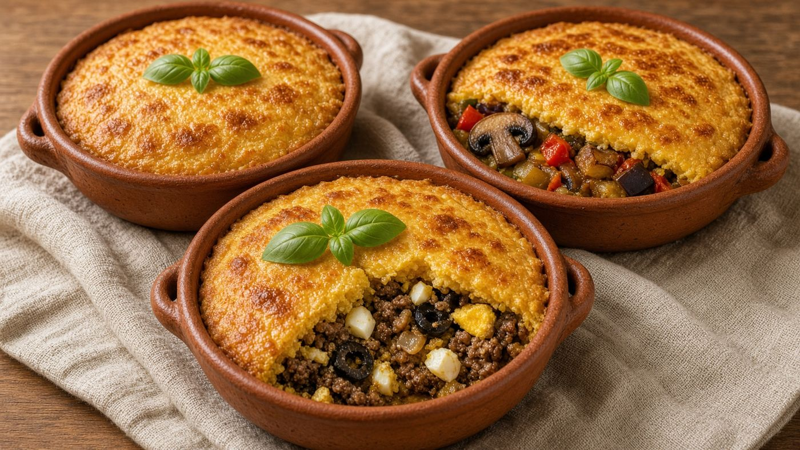
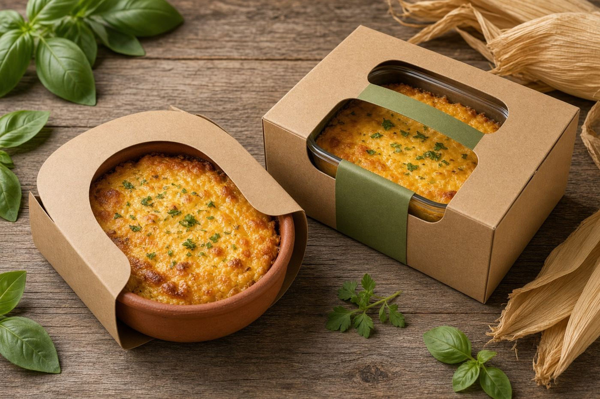
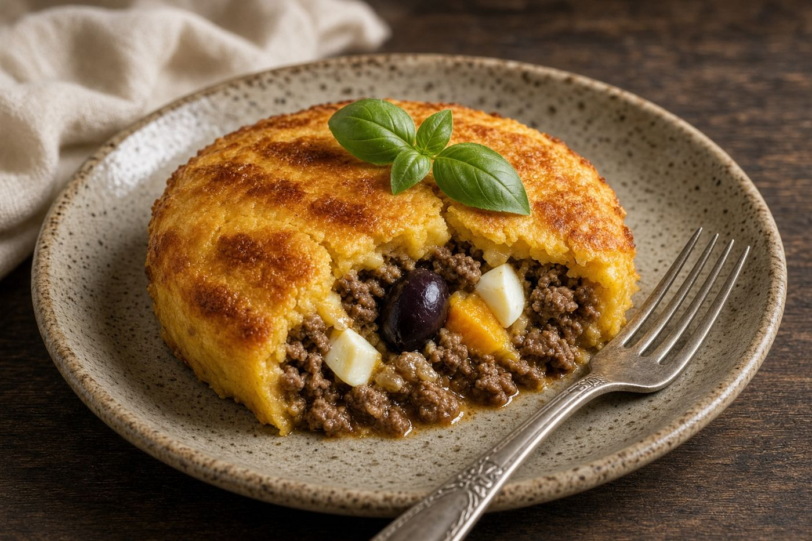
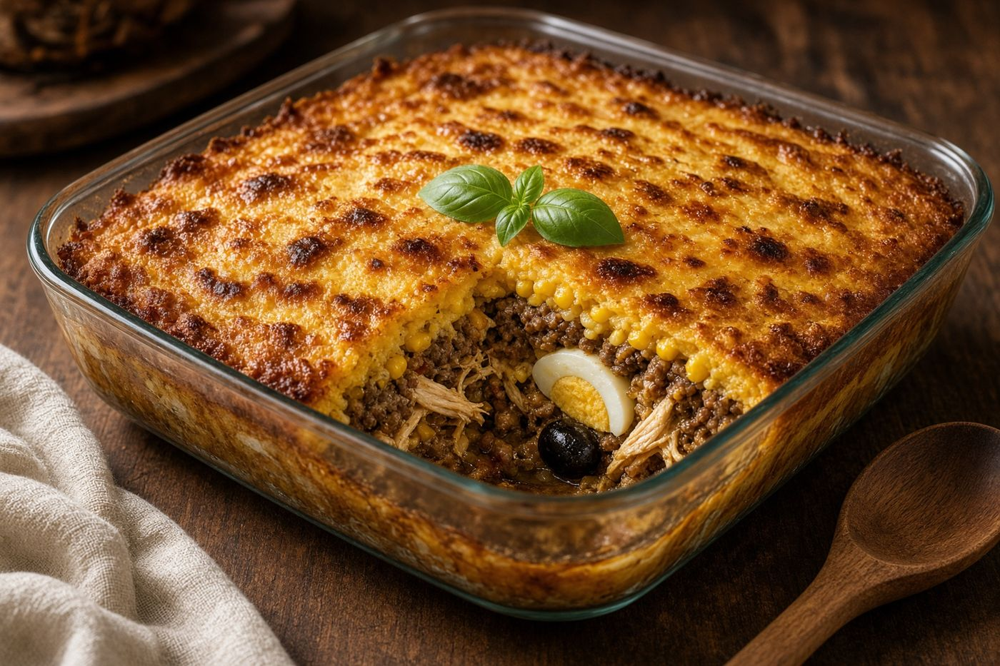
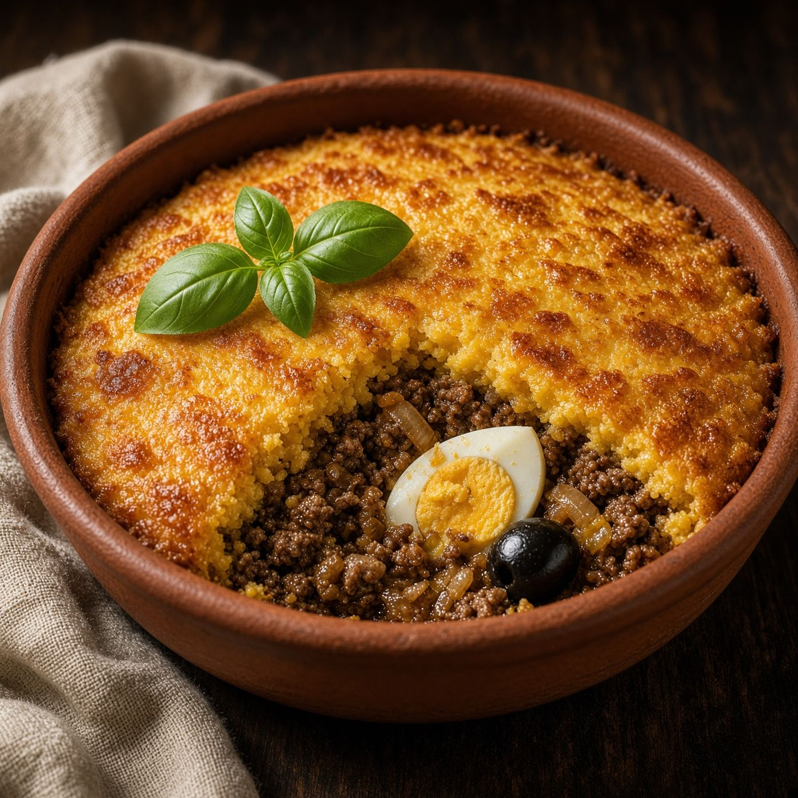
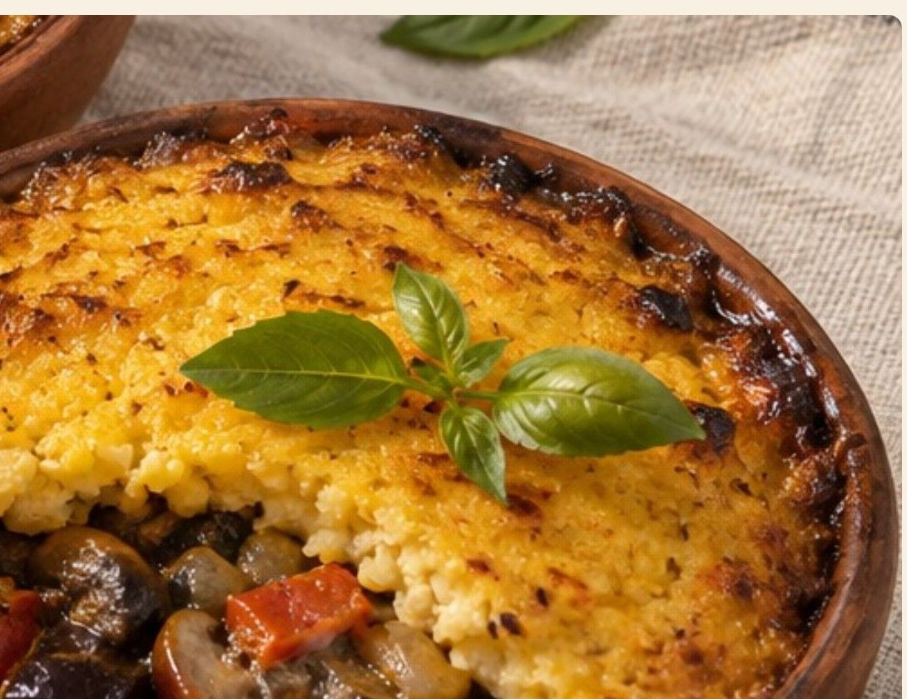

Tradicional da Casa
Carne bovina, frango desossado, ovo cozido, azeitonas pretas e passas.
Cozinha chilena, refrigerada
Pastel de choclo chileno refrigerado, em três variedades, nascido do ofício de oleiro de Pomaire. Chega pronto para aquecer, na própria paila de barro.

Cada parte do projeto tem a sua página. Comece pelo que mais te interessa.
As três variedades, os dois formatos e os preços.

Rótulo, paila retornável, manga e caixa kraft.

Forno, micro-ondas e cuidados de conservação.

Nome, missão, visão, valores e identidade visual.

Descontos de lançamento e calendário dos três primeiros meses.

O ofício do oleiro e a Economia 360.
Oficina em Pomaire e canais de venda no Chile.

Canais a avaliar em uma segunda etapa.
Carne bovina, frango desossado, ovo cozido, azeitonas pretas e passas.
Carne bovina, ovo cozido e azeitonas pretas. Sem frango nem passas.

Cogumelos, berinjela, pimentão e cebola. Vegetariana, sem carne.